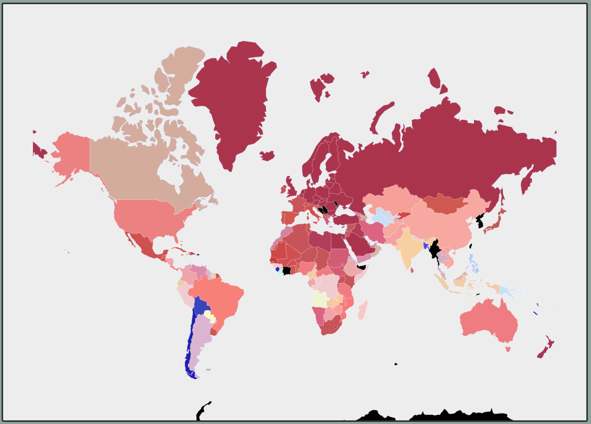
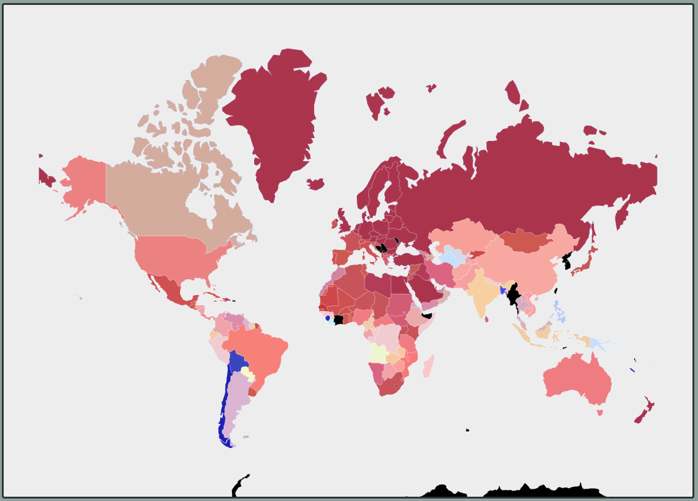
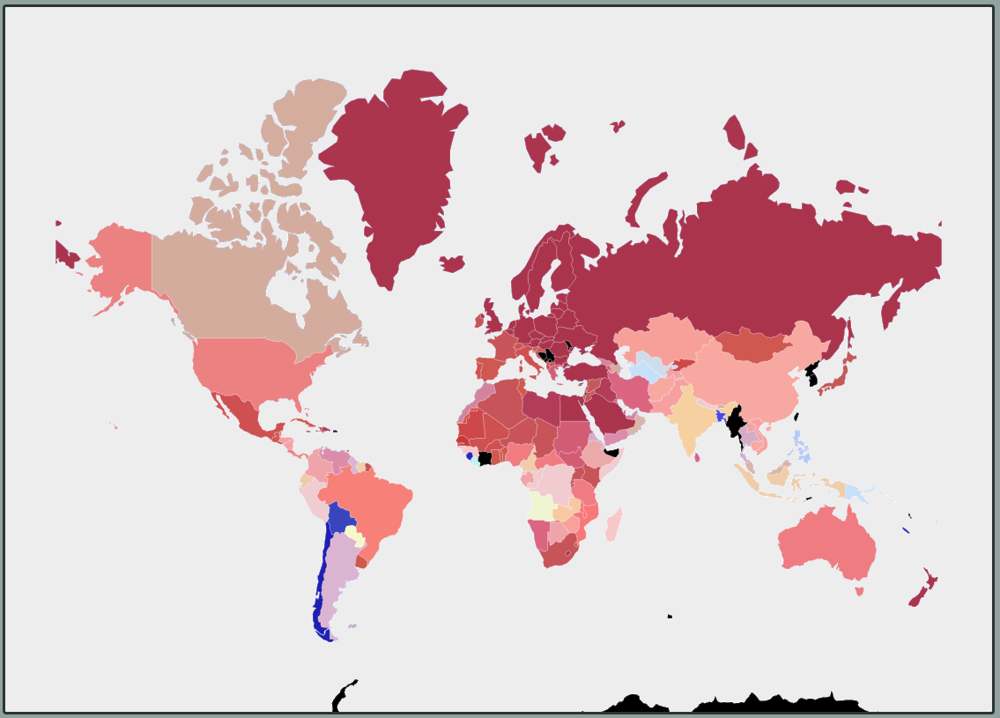

Use the slider to investigate temperature change around the globe. Hover over the countries to see their corresponding values.
It can be hard to see temperature change over time when over the past 100 years, global temperature has only changed by 1 degree Celcius
The values and colors you see are the net-difference between the current selected year and the first time this dataset was logged, 1901.
**I want a gif showing the temperature over time but couldn't get my implementation to work, so here are some pictures...
**I also want scrolling text while viewing these pages so its easy for users to navigate the map and still read
